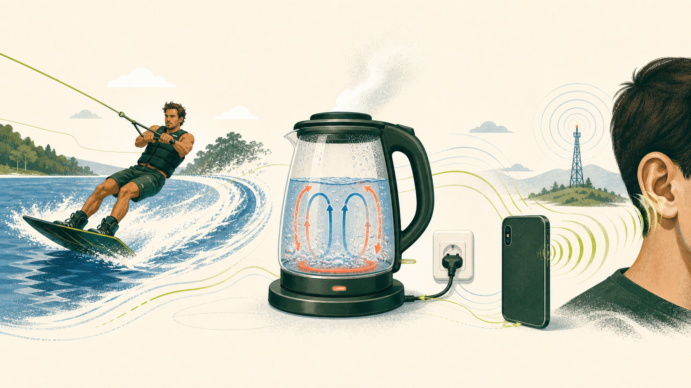

Урок 01 · 15–20 хвилин
Фізика — це не формули.
Це правила змін.
Твоя перша карта світу: як описувати зміни, що їх спричиняє, куди переходить енергія і чому масштаб має значення.

01 · Опис
Спочатку — вимірювана зміна
«Швидко», «гаряче» й «важко» — це відчуття. Фізика питає: наскільки швидко, яка температура, яка маса? Число разом з одиницею робить твердження перевірним.
02 · Рух
Сила змінює рух, а не створює його
Якщо сумарна сила дорівнює нулю, тіло зберігає швидкість і напрям. Це інерція. Тому ремінь безпеки потрібен: авто вже зупинилося, а тіло ще «продовжує» попередній рух.
Рух може тривати без незрівноваженої сили. Сила потрібна, щоб швидкість змінилася.
03 · Енергія
Енергія не зникає — вона переходить
Батарея перетворює хімічну енергію на електричну, двигун — на рух, а тертя — на тепло. Потужність показує, скільки енергії передається щосекунди.
04 · Потоки
Різниця штовхає систему до вирівнювання
Тепло йде від гарячішого до холоднішого, повітря — від вищого тиску до нижчого, заряд — через різницю потенціалу. Без різниці немає спрямованого потоку.
05 · Масштаб
Подвоїти — не завжди означає «вдвічі»
Площа зростає як довжина², об’єм — як довжина³, а кінетична енергія — як швидкість².
Мінілабораторія
Швидкість ×2 → енергія ×4
Порівняння для тієї самої маси: 30 км/год ↔ 60 км/год. Саме тому трохи вища швидкість різко збільшує вимоги до гальмування.
Самоперевірка
Забери чотири маркери
01Шукай, що змінюється.
02Питай, яка взаємодія це спричинила.
03Відстежуй, куди перейшла енергія.
04Перевіряй масштаб і одиниці.